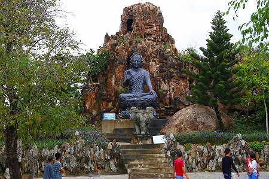

というわけで山登りで疲れた体を美味いものでおもてなすタイムである。
ダナンの海岸沿いは南北数十キロにわたってビーチが続く。
どうやら南に行けば行くほど高級リゾートらしいのだが、そんなエリアには一歩も足を踏み入れていないので良く判りません！
というわけで北側にあるビーチには比較的庶民的な海鮮料理屋が並んでおり、に地元の人に勧められたので行ってみることにした。
中国人の団体さんで賑わっている飯屋で海鮮を堪能した後、日が暮れたビーチを散策。
すると海の向こうに妖しく光る観音様を発見。そうかあれが
ダナン名物のレディブッダか！
ちなみにダナンという街は五行山以外観光地と呼べるところが少ないのだ。
というわけで翌日、レディブッダへ行ってみることにした。
大観音ことレディブッダはダナン市街の北東部に位置するソンチャン半島の中腹に位置する
霊應寺ChuaLihnUngというお寺の境内にある。
戦争で焼失したが近年再建した寺で、まだ仏塔などは完成していなかった。
本堂。
とりあえず本堂で参拝。
本堂の前にはたくさんの盆栽が並んでいた。

盆栽と言っても日本のものとは違い、結構大きい。
中には盆景というのだろうか、巨大な水槽のようなところに石が置かれ、その石に階段や建物などが配置されているジオラマ的なものもある。
ベトナムの盆栽や盆景はなかなか面白くて見ていて全然飽きない。
詳しくは宮田珠己アニキの名著「ホンノンボ」をご覧あれ。

他にも小さな池の畔にもミニチュアの建物や橋があって油断ならない。

さて、本丸の大観音さまである。
本堂に対してお尻を向けていらっしゃるので背後からのファーストコンタクト。
正面はこんな。
建立は2010年、高さ67ｍ。
日本で言えば東京湾観音とか会津慈母大観音とか久留米の救世慈母大観音よりやや大きめ、小豆島大観音や加賀大観音あたりと同じ感じと思っていただければ凄く判りやすいですよねー。
え？判んないの？…そうすか…。
あっ！
太陽の塔とほぼ同じ！これでどや！
…というくらい大きな観音様でございます…。
端正な御顔立ちな観音様である。
ここの観音様もそうだが、何故か東南アジアの観音像は花瓶のような壺を持っている場合が多い。何でだろー（調べる意思なし）。
台座の中に入ることが出来る。
内部は意外とあっさりしていて、正面に仏像が並んでいるだけ。
観音様の背後を見ると管機構のような穴が開いているので、もしかしたら上まで登れるんじゃないか、と期待してあちこち探してみたものの、特になかったっす。
東南アジア名物、死んだように眠る犬ども。
男子トイレの通路が狭い！
…というのが一番印象的でした。
次へGOGOGO！